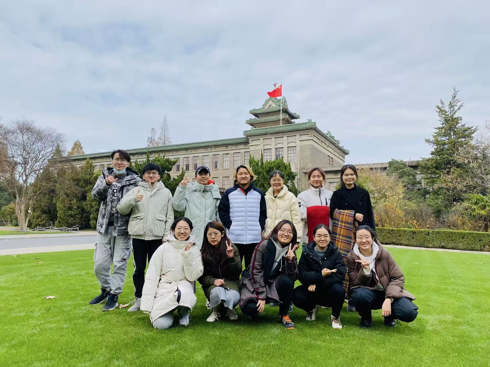
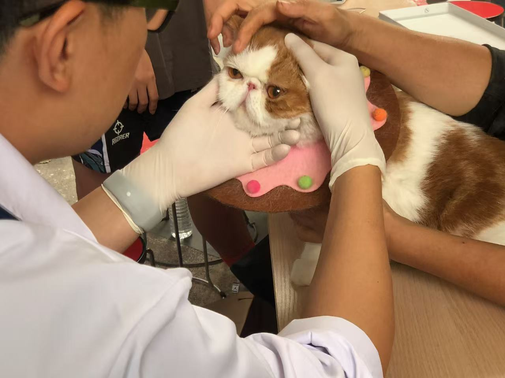
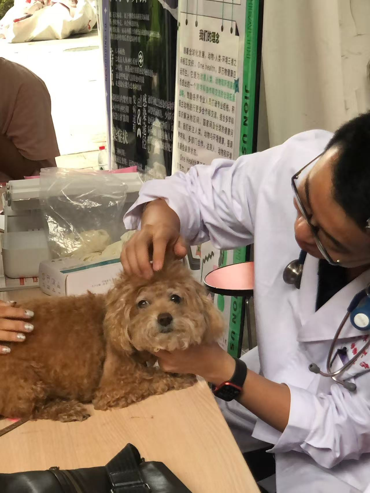
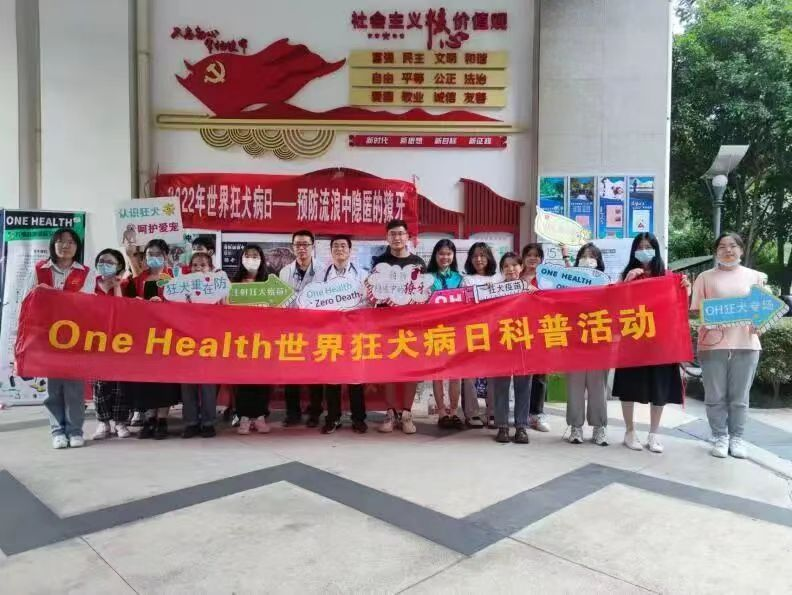

"4880" was a cross-institutional course taught jointly by Cornell University, the Tata Institute of Social Sciences in India, and Nanjing Agricultural University and China Agricultural University in China. Over ten rotating professors lectured across agricultural economics, bioenergy, food and nutrition science, and animal science, all orbiting one question: how do food, energy, and water systems interact, and what happens when a government pulls one lever.
One of the most memorable parts of the course was a mock debate on electrifying the US transportation system. I teamed up with classmates from the US and India to argue for the policy. We actually ended up winning the debate, but the real takeaway for me was the collaboration itself. It forced me to tackle a complex issue alongside people from entirely different academic worlds. That experience opened my eyes to the messy, tangled relationship between our food, energy, and environmental systems, and ultimately sparked my long-term focus on sustainable development.


Every September 28 is World Rabies Day, and in 2022 I helped run our club's campaign around it under the banner "One Health, Zero Deaths," hosted with NAU's College of Veterinary Medicine and its Belt and Road cross-border animal disease institute. I was one of the planners and organizers, running both the offline volunteer work and the online lecture, and as the club's publicity lead I wrote and published the WeChat posts promoting it.
On the ground, that meant free veterinary clinics for residents' pets in two Nanjing communities, Hongshan Road and Yincheng East Garden, where our veterinary staff and students examined pets and answered owners' questions. I designed the outreach pamphlet and the poster for our closing lecture, "Ending Rabies: Cooperation and Immunity," held that evening in the College of Veterinary Medicine's lecture hall with an online option.


Alongside the club's on-campus work, I took two international online programs. In January 2023, a two-week Wageningen Academy winter school on biotechnology, agriculture and food had me working with an interdisciplinary team on regenerative agriculture, tracing a full value chain from environmental issues through food processing to human nutrition.
Two years earlier, over July and August 2021, UW Advance Agriculture at the University of Wisconsin–Madison covered biosystems engineering, crop growth and management, and soil security, closing with a research assignment I did on invasive aquatic species in China.